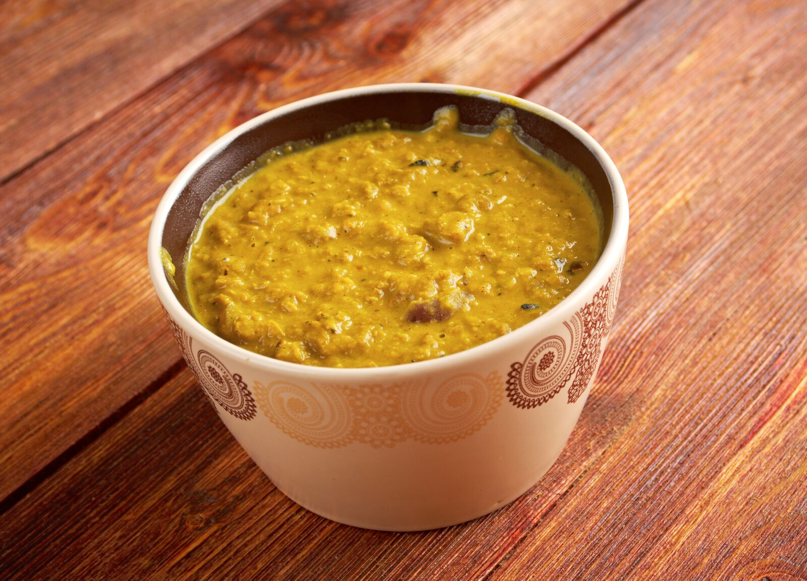

Lunch
These 'lunch' recipes work equally well for dinner and, your baby will also probably be just as happy with them for snacks or breakfasts if you like!
Lunch
- Broccoli and polenta mash
- Cheesy leek and potato mash
- Cheesy pasta sauce
- Cheesy spinach spaghetti
- Dahl
- Eggy veg
- Mushroom carbonara
- Salmon and veggie couscous
- Sweet potato and lentil soup
- Tuna & creamed corn mac
Broccoli and polenta mash
 Good for: other meal times as well as lunch
Good for: other meal times as well as lunch
Storage: not suitable for freezing
Note: quick and easy
Ingredients
- ¼ cup fine polenta/semolina
- 1 cup water
- 1 cup cow's milk (or made up formula for babies younger than 12 months)
- 2 large florets (pieces) broccoli
Method
- In a pot over medium-high heat, mix polenta with water and milk, stirring continuously until it begins to boil.
- Reduce heat and simmer for 10 minutes while stirring, until cooked (should be smooth rather than 'grainy' when cooked).
- Meanwhile, steam/boil/microwave broccoli until tender.
- Mash/purée broccoli and polenta together to required consistency before serving.
Cheesy leek and potato mash
 Good for: the whole family
Good for: the whole family
Storage: freeze or keep in the fridge for up to 3 days, covered
Ingredients
- ½ cup leek (finely chopped)
- 1 small potato (diced)
- ¼ cup grated cheddar cheese
- 1 teaspoon canola or olive oil margarine
- boiling water
Method
- Melt margarine in a frying pan.
- Fry leek over a low heat for 3 minutes.
- Add potato, cover with boiling water and cook for 6 minutes or until soft.
- Drain excess water.
- Add cheese and mash to the required consistency.
- Use once cooled.
- Freeze any extra in ice trays for later.
To serve the family
For a family of 4 use:
- 2 leeks (finely chopped)
- 5 potatoes (diced)
Follow the same method up to step 4, THEN:
- Put into a baking dish (do not mash).
- Sprinkle with cheese.
- Bake for 20 minutes at 180°C or until golden.
- Purée or mash for your baby with some of your baby's usual milk (breast/formula milk).
Cheesy pasta sauce
 Good for: basis for macaroni/cauliflower cheese or lasagne topping; the whole family
Good for: basis for macaroni/cauliflower cheese or lasagne topping; the whole family
Storage: freeze or keep in the fridge for up to 2 days, covered
Ingredients
- 1 tablespoon canola or olive oil margarine
- 1 tablespoon plain flour
- 2 cups cow's milk (or made up formula for babies less than 12 months old)
- ½ cup grated cheddar cheese
- 1 teaspoon dried mixed herbs (optional)
Method
- Melt margarine in a pot over a low heat.
- Add flour and herbs (if using), stirring to make smooth paste.
- Increase heat slightly and add milk, a little at a time, stirring until smooth.
- Continue stirring and simmer for 5 minutes or until sauce thickens.
- Remove from heat and stir in cheese until melted.
- Use or freeze extra in ice/cupcake trays for later.
To serve the family
For a family of 4, follow the same method but instead use:
- 2 tablespoons canola or olive oil margarine
- 2 tablespoons plain flour
- 4 cups cow's milk (for babies old than 12 months)
- 1 ½ cups grated cheddar cheese
- 2 teaspoons dried mixed herbs (optional)
Cheesy spinach spaghetti
 Good for: other meal times as well as lunch; the whole family
Good for: other meal times as well as lunch; the whole family
Storage: freeze or keep in the fridge for up to 2 days, covered
Note: young people love spaghetti; adding spinach adds extra nutrition
Ingredients
- about 20 strands thin spaghetti (or 1 cup pasta shapes)
- 1 tablespoon canola or olive oil
- 1 medium onion (finely chopped)
- 1 clove garlic (crushed)
- 3 cups fresh spinach/silverbeet (or 50-60g defrosted frozen spinach)
- 1 ¼ cups plain cottage cheese (blended/mashed)
- 1 squeeze lemon juice
- 4 tablespoons grated cheese (parmesan if you have it)
Method
- Cook spaghetti/pasta according to instructions on pack.
- Meanwhile, fry onion and garlic in oil until soft.
- Add spinach with lemon juice until it wilts and turn off the heat.
- Drain water from spaghetti/pasta.
- Add cottage cheese and cheese to spinach mixture and stir well.
- Mix through spaghetti/pasta.
- Mash/purée to required consistency before serving.
- Freeze extra in ice/cupcake trays for later.
To serve the family
For a family of 4 use:
- 500g thin spaghetti (or 3 cups pasta shapes)
- 3 tablespoons canola or olive oil margarine
- 3 medium onions (finely chopped)
- 3 cloves garlic (crushed)
- 9 cups fresh spinach/silverbeet (or 160g defrosted frozen spinach)
- 3 ¾ cups plain cottage cheese (blended/mashed)
- 3 squeezes lemon juice
- ¾ cup grated cheese (parmesan if you have it)
Follow the same method but serve after step 6.
Dahl

Good for: serve thick with rice for the whole family
Storage: freeze or in the fridge for up to 3 days, covered
Note: easy, cheap and a real winner with little people; makes enough for 1-2 feeds
Ingredients
- 1 tablespoon dried red lentils
- ¼ cup mixed vegetables (e.g. carrot, peas, beans)
- 2 cups water
- pinch turmeric or cumin (optional)
Method
- Wash lentils then soak in water for 30 minutes (to reduce 'gassiness').
- Drain water then wash again.
- Clean and wash vegetables then dice into small pieces.
- Put lentils, vegetables, water and turmeric/cumin (if using) in a pot on high heat.
- Bring to the boil then reduce heat and simmer for 30-40 minutes, stirring often to stop lentils sticking to the bottom.
- When lentils and vegetables are soft enough to mash with a spoon, remove from heat.
- Mash/purée to required consistency with extra water if needed before serving warm.
- Any unused dahl can be frozen or covered and refrigerated for up to 3 days.
To serve the family
For a family of 4, use:
- 1 ½ cups dried red lentils
- 2 cups mixed vegetables (e.g. carrot, peas, beans)
- 4 cups water
- 2 teaspoons canola or olive oil
- 1 teaspoon turmeric
- 1 teaspoon cumin
- 2 cups dry brown/basmati rice
Follow the same method up to step 3, THEN:
- Fry turmeric and cumin in oil in a pot for a few seconds then add lentils and water.
- Bring to the boil then reduce heat and simmer for 30 minutes, stirring often to stop lentils sticking to the bottom.
- Add vegetables and simmer for another 5 minutes (add more water if needed).
- Cook rice according to the instructions on pack.
- Serve Dahl with rice.
Eggy veg
Good for: other meal times as well as lunch
Storage: in the fridge for up to 1 day, covered; not suitable for freezing
Note: great way to use leftover vegetables; always cook eggs well
Ingredients
- 1 egg
- 2 tablespoons plain cottage cheese
- 1 tablespoon finely chopped cooked vegetables (e.g. carrots, green beans, broccoli)
Method
- Preheat oven to 180°C.
- In a bowl, beat egg with cottage cheese.
- Stir in chopped vegetables.
- Grease a small oven-proof dish (at least 200mL) and pour in egg mixture.
- Place dish on baking tray and cook for about 20 minutes or until egg is set.
Mushroom carbonara
 Good for: any meal time; the whole family
Good for: any meal time; the whole family
Storage: freezer friendly
Note: tasty, healthier dish that has much less salt than the traditional ham/bacon version
Ingredients
- about 20 strands uncooked thin spaghetti (or 1 cup pasta shapes)
- 1 teaspoon corn flour
- ½ cup mushrooms (finely chopped)
- 1 teaspoon canola or olive oil
- ½ cup cow's milk
- ½ handful grated cheese
- ½ cup frozen peas
- pinch dried mixed herbs (optional)
Method
- Cook spaghetti/pasta according to the instructions on the pack.
- Meanwhile, fry mushrooms in oil on medium heat until soft.
- In a mug, mix corn flour with a few teaspoons of milk until combined and add to mushrooms.
- Stir remaining milk, frozen peas and herbs (if using) into mushrooms.
- Reduce heat and stir for 2 minutes or until the sauce bubbles and thickens.
- Remove from heat and set aside.
- Drain water from spaghetti/pasta.
- Stir cooked spaghetti/pasta and cheese through mushroom sauce.
- Mash/purée to required consistency before serving.
- Any unused carbonara can be frozen in ice trays for later.
To serve the family
For a family of 4 use:
- 500g thin spaghetti (or 3 cups pasta shapes)
- 2 cups onion (finely chopped)
- 2 tablespoons canola or olive oil
- 4 teaspoons corn flour
- 1 ½ cups milk
- 1 cup grated cheese
- 2 cups frozen peas
- 1 teaspoon dried mixed herbs (optional)
Follow the same method (serve after step 8).
Salmon and veggie couscous
 Good for: quick and easy meal anytime; the whole family
Good for: quick and easy meal anytime; the whole family
Note: if using tinned salmon/tuna, follow the same method but cook just the tomatoes and capsicum in foil at step 3
Ingredients
- 1 small skinless salmon fillet or a small tin of salmon/tuna in spring water (drained)
- ½ medium capsicum (finely chopped)
- 3 medium cherry tomatoes (finely chopped)
- ¼ cup uncooked couscous (or white rice)
- 1 cup boiling water
- ½ teaspoon canola or olive oil margarine
- ½ teaspoon lemon juice (optional)
Method
- Preheat oven to 180°C.
- Place salmon on a flat piece of foil (if using fresh fish).
- Top salmon with tomatoes and capsicum then sprinkle with lemon juice if using.
- Seal salmon parcel in foil and place on baking tray.
- Cook for 20-30 minutes or until salmon is cooked through.
- Flake and mash salmon, making sure there are no bones.
- Mix with tomatoes and capsicum and set aside.
- Place couscous in a bowl (if using rice, cook according to instructions on the pack).
- Add boiling water until just covered and mix in the margarine.
- Cover and leave for 5 minutes.
- Use a fork to 'fluff up' the couscous.
- Mix the salmon/tinned fish and vegetables with couscous/rice.
- Mash/ purée to required consistency before serving.
To serve the family
Follow the same method but serve after step 12 and allow per adult:
- 1 medium skinless salmon fillet
- ½ medium capsicum (finely chopped)
- 5 medium cherry tomatoes (finely chopped)
- ⅓ cup uncooked couscous (or white rice)
- ½ teaspoon canola or olive oil margarine
- ½ teaspoon lemon juice (optional)
Sweet potato and lentil soup
 Good for: any meal time; the whole family as a soup
Good for: any meal time; the whole family as a soup
Storage: freezer friendly
Note: hearty, cheap and provides good protein and energy
Ingredients
- 1 teaspoon canola or olive oil
- 1 large carrot (washed and chopped small)
- ⅓ cup dried red lentils
- 2 small sweet potatoes (peeled, chopped into chunks)
- 1 whole bay leaf (optional)
- 2 cups hot water
- pinch dried mixed herbs (optional)
Method
- Wash lentils well.
- Put oil, carrots and lentils in a pot and cook on medium heat for 2 minutes.
- Add sweet potato, water, bay leaf (if using) and herbs (if using).
- Turn heat up until it boils, then lower heat and simmer for 30 minutes or until lentils and vegetables are soft.
- Remove bay leaf (if used).
- Mash/purée to required consistency before serving.
- Freeze any unused soup in ice trays for later.
To serve the family
For a family of 4, use:
- 2 teaspoons canola or olive oil
- 3 large carrots (chopped small)
- 1 ½ cup dried red lentils
- 4 small sweet potatoes (peeled, chopped into chunks)
- 2 whole bay leaves (optional)
- 5 cups hot water (add more if needed)
- ½ teaspoon dried mixed herbs (optional)
Follow the same method to step 5 and serve chunky or blend for a smooth soup.
Tuna and creamed corn macaroni
 Good for: any meal time
Good for: any meal time
Storage: freezer friendly
Note: babies and young children love tuna; great source of iron and calcium
Ingredients
- ½ cup macaroni (or other pasta)
- 2 tablespoons tinned tuna in spring water (drained)
- 2 tablespoons creamed corn
- ¼ cup grated cheese
- 2 tablespoons cow's milk (or breast/made up formula)
Method
- Cook macaroni/pasta according to the instructions on pack.
- Drain water from macaroni then return to pot.
- Over medium heat, add milk and cheese, stirring until combined and cheese has melted.
- Stir in creamed corn and tuna.
- Mash/purée to required consistency before serving warm.
- Freeze any unused macaroni in ice trays for later.